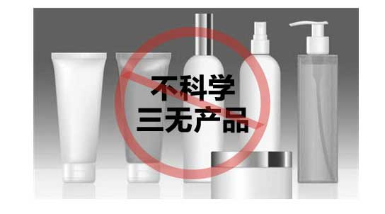
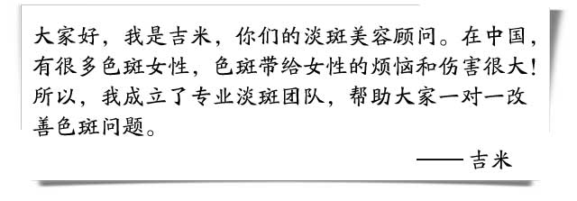
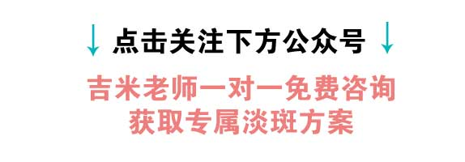
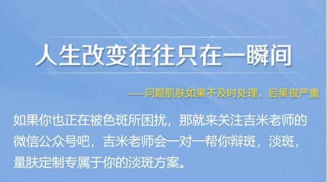
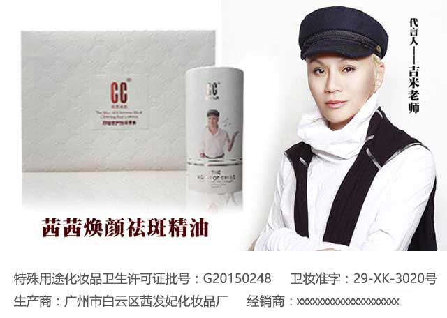

色斑包括黄褐斑、雀斑，辐射斑，老年斑等，都是由于皮肤黑色素的沉着而形成的一种常见的肌肤问题。
相信你也有过这样的经历，用了很多淡斑产品，却没有一点效果。去美容院淡斑，却越弄斑越多。
你研究过产品的成分是否适合自己的肤质吗？你有可能一直在使用错误的方法，不科学成分的产品，这些只会加深对你脸部的伤害。
同样是人，为什么别人的斑很快能淡化，自己却千方百计淡斑毫无作用呢？ 答案只有一个：你不了解自己的肤质！
我们都知道皮肤一般分为敏感性肌肤、干性肌肤、油性肌肤，每种肌肤的护理方法是不同的，色斑也是同样道理，要分不同肌肤使用不同的护理方法。所以不要听说哪个朋友用了什么产品很有效就跑去买，要先了解自己的肤质和色斑产生的原因是否相同，适合别人的护理方法不一定适合自己。
1、你自认为现在脸上的斑点的严重程度为？
2、你想淡斑淡到一个什么样的效果？
3、你的年龄是？
4、斑点长在脸上哪个部位？
特别注意
色斑一旦出现，衰老就会加速，由点成片，毁了整张脸。因为刚长斑时，肌肤里层已经形成大量黑色素，不及时处理，黑色素会逐渐增多。
淡化色斑，用对方法很重要！
胡乱尝试，只会令皮肤更受伤
色斑顽固埋藏在肌肤深层，不当的淡斑方法仅仅是漂白皮肤表皮的黑色素，无法深入基底层。不当淡斑后， 基底层黑色素还是会上移反弹到表皮层，继续形成严重的色斑 。
 △记得是搜索公众号，不是微信号哦
 |
公众号：
长按复制，获取淡斑方案 |